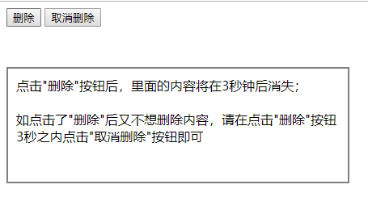
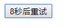
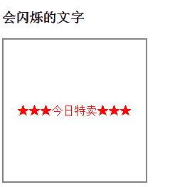

JS BOM
window对象
全局变量和全局方法都归在window上
alert-comfirm-prompt
让alert 、confirm等弹出框上的提示文字实现换行：\n
// confirm()
// 点击确定返回true，取消返回false
var btn=document.getElementById("btn");
btn.onclick=function(){
// 弹出确认对话框
var result=window.confirm("您确定要删除吗？删除之后该信息\n将不可恢复！");
if(result){
document.getElementById("box").style.display="none";
}
}
// prompt("text","defaultText")
// text：对话框中显示的纯文本
// defaultText：默认的输入文本
// 点击确认返回文本，点击取消返回null
var message=prompt("请输入您的星座","天蝎座");
console.log(message);open-close
如果open方法中的url参数为空的话，那么新窗口也会被打开只是不会显示任何文档
window.onload = function(){
// 打开子窗口，显示newwindow.html
window.open("newwindow.html","newwindow","width=400,height=200,left=0,top=0,toolbar=no,menubar=no,scrollbars=no,location=no,status=no");
var quit = document.getElementById("quit");
// 点击关闭当前窗口
quit.onclick = function(){
window.close("newwindow.html");
}
}延迟调用setTimeout()
//调用函数
var fnCall=function(){
alert("world");
}
setTimeout(fnCall,5000);
//调用匿名函数
var timeout1=setTimeout(function(){
alert("hello");
},2000)
clearTimeout(timeout1);实现以下要求：
（1） 点击“删除”按钮3秒后，页面上div里面的文字消失
（2） 点击“删除”按钮之后的3秒内，如果点击“取消删除”按钮，那么页面上div里面的文字就不会被删除
<!DOCTYPE html>
<html>
<head lang="en">
<meta charset="UTF-8">
<title>定时器</title>
<style type="text/css">
div{width:400px;height:120px;margin-top:50px;border:2px solid gray;padding:10px;}
</style>
</head>
<body>
<input type="button" value="删除">
<input type="button" value="取消删除">
<div>点击"删除"按钮后，里面的内容将在3秒钟后消失；<br/><br/>如点击了"删除"后又不想删除内容，请在点击"删除"按钮3秒之内点击"取消删除"按钮即可</div>
<script type="text/javascript">
var btn1=document.getElementsByTagName('input')[0];
var btn2=document.getElementsByTagName('input')[1];
var div=document.getElementsByTagName('div')[0];
var timer;
btn1.onclick=function(){
timer=setTimeout(function(){
div.innerHTML='';
},3000);
}
btn2.onclick=function(){
clearTimeout(timer);
}
</script>
</body>
</html>
验证码倒计时案例：
<!DOCTYPE html>
<html lang="en">
<head>
<meta charset="UTF-8">
<title>Document</title>
<script>
window.onload=function(){
var btn=document.getElementById("btn");
var times=10;
var timer=null;
btn.onclick=function(){
if(this.getAttribute("clicked")){return false;}
var _this=this;
timer=setInterval(function(){
times--;
if(times<=0){
clearInterval(timer);
_this.value="发送验证码";
//_this.disabled=false;
_this.removeAttribute("clicked",false);
times=10;
}else{
_this.value=times+'秒后重试';
//_this.disabled=true;
_this.setAttribute("clicked",true);
}
},1000)
}
}
</script>
</head>
<body>
<div class="box">
<input type="button" value="发送验证码" id="btn">
</div>
</body>
</html>
会闪烁的文字：
<!DOCTYPE html>
<html>
<head lang="en">
<meta charset="UTF-8">
<title>闪烁的文字</title>
<style type="text/css">
div{
width:200px;
height:200px;
line-height:200px;
border:2px solid gray;
text-align:center;
color:red;
}
</style>
</head>
<body>
<h3>会闪烁的文字</h3>
<div id="text"> </div>
<script type="text/javascript">
var text=document.getElementById('text');
var flag=0;
setInterval(function(){
if(flag==0){
flag=1;
text.innerHTML='☆☆☆今日特卖☆☆☆';
}else if(flag==1){
flag=0;
text.innerHTML='★★★今日特卖★★★';
}
},500);
</script>
</body>
</html>
location.href返回当前页面的完整URL
location.hash 返回#后面的
console.log(location.href);
console.log(location.hash);
var btn=document.getElementById("btn");
btn.onclick=function(){
// 可以实现跳转
location.hash="#top";
}
// 返回服务器名称和端口号
// 本地不行，要到服务器上
console.log(location.host);
// 返回服务器名称
console.log(location.hostname);
// 返回URL中的目录和文件名
console.log(location.pathname);
// 返回URL中的查询字符串，以？开头
console.log(location.search);改变浏览器的位置
setTimeout(function(){
// 会在历史记录中生成新纪录
location.href='index6.html';
window.location='index6.html';
// 不会在历史记录中生成新纪录
location.replace("index6.html");
},1000)
document.getElementById("reload").onclick=function(){
// 有可能从缓存中加载
location.reload();
// 从服务器重新加载
location.reload(true);
}history保存用户访问页面的历史记录
forward 回到历史记录的下一步
var btn = document.getElementById("btn");
var btn2 = document.getElementById("btn2");
var btn3 = document.getElementById("btn3");
// 点击btn按钮时回到历史记录的上一步，后退
btn.onclick = function() {
// 方法一
history.back();
// 方法二
history.go(-1);
}
// 点击btn2按钮时回到历史记录的下一步，前进
btn2.onclick = function() {
// 方法一
history.forward();
// 方法二
history.go(1);
}
btn3.onclick = function() {
// 前进n步
history.go(n);
// 后退n步
history.go(-n);
}screen对象
// 获取屏幕可用宽高
console.log("页面宽："+screen.availWidth);
console.log("页面高："+screen.availHeight);
// 获取窗口文档显示区的宽高
console.log("pageWidth:"+window.innerWidth);
console.log("pageHeight:"+window.innerHeight);navigator对象
//console.log(navigator.userAgent);
// 判断浏览器
function getBrowser(){
var explorer = navigator.userAgent,browser;
if(explorer.indexOf("MSIE")>-1){
browser = "IE";
}else if(explorer.indexOf("Chrome")>-1){
browser = "Chrome";
}else if(explorer.indexOf("Opera")>-1){
browser = "Opera";
}else if(explorer.indexOf("Safari")>-1){
browser = "Safari";
}
return browser;
}
var browser = getBrowser();
console.log("您当前使用的浏览器是："+browser);
// 判断终端
function isPc(){
var userAgentInfo = navigator.userAgent,
Agents = ["Andriod","iPhone","symbianOS","windows phone","iPad","iPod"],
flag = true,i;
console.log(userAgentInfo);
for(i=0;i<Agents.length;i++){
if(userAgentInfo.indexOf(Agents[i])>-1){
flag = false;
break;
}
}
return flag;
}
var isPcs = isPc();
console.log(isPcs);